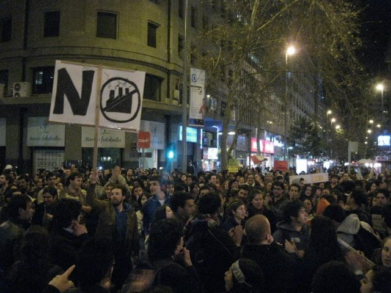

Que cosas suceden con el apagón
Esta imagen es maravillosa:

porque es un desmentido a un post que publiqué el mismo día que se tomó esta foto, la gente puede pasar del clickactivismo al activismo real. Se pueden usar las redes sociales para movilizar a la gente a protestar y manifestarse pacíficamente cuando no están de acuerdo con algo. Mis saludos a los que se manifestaron, me dejaron callado. Me saco el sombrero. Cuando alguien está convencido de que algo está mal, y actúa para cambiarlo, me parece que es valiente y noble.
Todo bien, pero hoy día se me cayeron los ambientalistas, porque están llamando a protestar con apagones.
¡Pero cómo!, ¡si iban tan bién!
Esto no es nuevo, hay un movimiento a nivel mundial que se llama "la hora del planeta", que consiste precisamente en hacer ese tipo de "gestos", apagar las luces por una hora. En este caso, están llamando a apagar las luces por 5 minutos, para protestar en contra de la instalación de una termoeléctrica en Punta de Choros.
Más de alguien habrá pensado que el gesto es importante, porque las agujas de las centrales termoeléctricas se deben haber movido hacia abajo, y eso habrá preocupado a los malvados ejecutivos de estas compañías, pero la verdad, es que no. Estos apagones no les provocan nada a las compañías generadoras de electrícidad, ni a las autoridades, porque, seamos sinceros, no se notan mucho, son protestas inocuas, una pequeña prolongación del tweet. Una marcha se nota, un apagón de luces de 1.000 casas no.
La paradoja de la energía
La energía no es una cosa que esté en peligro de extinción. Tampoco es un recurso escaso. La energía no se crea ni se destruye, sólo se transforma. La energía eléctrica se debe generar, si usted no la usa, otro la usa en su lugar, y si nadie la usa, se pierde y se disipa (adivinen, se convierte en calor que va a la atmósfera, y vamos calentando el planeta).
La verdad es que las compañías generadoras de electricidad, les conviene saber de estos apagones (cuando realmente son masivos), porque venden esos excedentes de energía a otros (y que bueno que alguien las compre, porque sino eso se disipa en calor, y el calentamiento global es algo malo, recuerden eso).
Cada vez se automatizan más estos procesos de venta de energía, así que imagino que en un futuro podrán monitorear estas llamadas al apagón, vigilando las redes sociales, anticipar una baja de demanda y ofrecerla al mercado, casi en tiempo real.
Así que ahí tienen niños, la paradoja. Cuando deciden hacer un apagón para protestar estas son las cosas que suceden: las compañías venden los excedente a otros (así que ni cosquillas le hacen), y la energía que no se usa se disipa, con lo cual contribuyen al calentamiento global (mis nietos se los agradecerán por que así la playa les va a quedar 60 kilómetros más cerca).
**Si realmente te preocupas del ambiente no debes ahorrar energía, porque ¡la energía no se puede ahorrar! **La energía no se acaba, la energía se genera y se debe usar. Si se genera y no se usa, se disipa, generando calor. Ese es el dilema de la energía, o no la generas, o la usas. Pero úsala en forma eficiente, usa equipos de bajo consumo, para que la energía sobrante la usen otros, y las centrales no produzcan tanto, para que al disiparse no aumente el calor del planeta.
Así que es mejor, si estás en contra de la instalación de termoeléctricas a carbón, marchar por las calles de tu ciudad, escribirle a tu diputado, o al alcalde, o alguna autoridad. Hacer un gesto que se note, usar tú energía en llamar la atención de los demás, que no están interesados, o no entienden el problema. Incluso es mejor, plantear ideas, y fomentar un debate serio e informado, sobre qué hacer para abastecer de energía en forma limpia y sustentable al país. Eso es usar la energía social en forma eficiente.